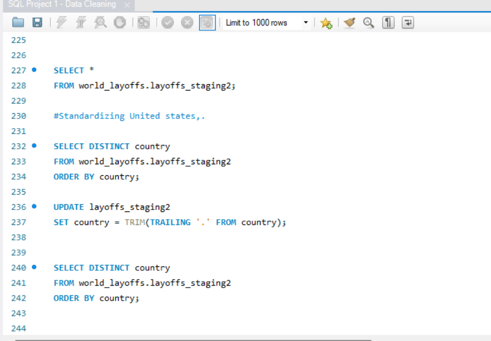

Case Study: Layoffs Data Cleaning (SQL)

Overview
This case study documents the complete data-cleaning workflow performed on the global Layoffs Dataset. The project prepares raw, inconsistent data for deeper analysis such as trend evaluation, industry comparison, and workforce impact estimation.
Objectives
- Remove duplicate and inconsistent records
- Standardize company, industry, and country names
- Handle missing or null values systematically
- Fix incorrect date formats and invalid entries
- Prepare a clean dataset for EDA and dashboard visualizations
SQL Code Used
View SQL Data Cleaning Script →Dataset
layoffs_cleaned_dataset.csvMethodology
- Duplicate Removal: ROW_NUMBER() used to remove exact duplicates.
- Standardization: Industry names and company names transformed to unify spelling.
- Null Handling: Missing values filled or filtered based on context.
- Date Fixing: Converted inconsistent date formats to standard YYYY-MM-DD.
- Validation: Ensured all numeric fields contained valid values.
Key Findings
- Tech companies represent the largest portion of layoffs globally.
- 2022 shows the highest spike in layoffs across all industries.
- Many companies had inconsistent industry labels before cleaning.
- Missing values in “percentage_laid_off” required careful interpretation.
Conclusion
This case study demonstrates the importance of data cleaning in real-world analytics. A dirty dataset can lead to incorrect insights—cleaning ensures accuracy and reliability for downstream analysis and dashboards.